MRSI Raw
Raw metabolite maps (pre-pipeline)
Metabolite: CrPCr
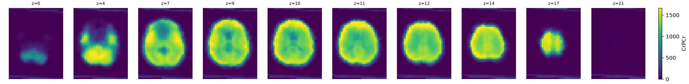
Metabolite: GPCPCh

Metabolite: GluGln

Metabolite: Ins

Metabolite: NAANAAG

MRSIPrep version: 2.2.2
BIDS directory: /data
Output directory: /out/mrsiprep
Parcellation mode: synthseg
Tissue backend: synthseg-fast

| metabolite | n_total_voxels | mean_snr | median_snr | mean_linewidth | median_linewidth | mean_crlb | median_crlb |
|---|---|---|---|---|---|---|---|
| NAANAAG | 20738 | 14.135942 | 15.0 | 0.038052 | 0.036 | 4.933007 | 4.0 |
| GPCPCh | 20738 | 14.228251 | 15.0 | 0.037878 | 0.036 | 6.853189 | 6.0 |
| CrPCr | 20738 | 14.257129 | 15.0 | 0.037799 | 0.036 | 6.431937 | 5.0 |
| GluGln | 20738 | 14.345459 | 15.0 | 0.037970 | 0.036 | 11.069957 | 11.0 |
| Ins | 20738 | 14.465190 | 15.0 | 0.037318 | 0.033 | 8.926435 | 8.0 |
detected ventricleMNI priornative MRSI space, pre-coregistration · all metabolites at z=10

Dice with the subject's lateral ventricles · median 0.14 (SynthSeg, moved to MRSI space by the MRSI→T1w transform; green from 0.15)

Partial-volume-corrected metabolite maps, on the native MRSI grid, at the same slices as the MRSI Raw tab so the two can be compared directly.
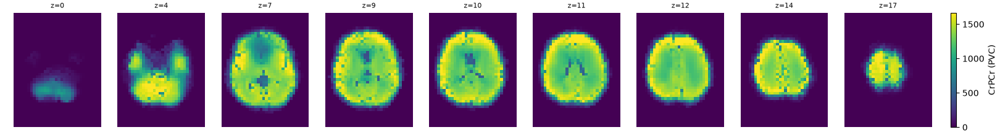


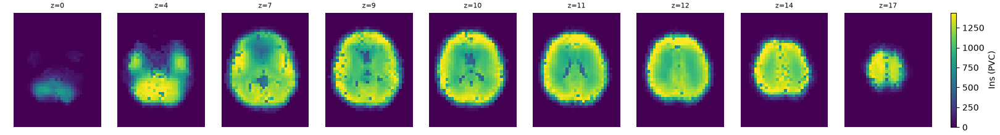

| Metabolite | Spike voxels detected |
|---|---|
| NAANAAG | 0 |
| GPCPCh | 0 |
| CrPCr | 7 |
| GluGln | 25 |
| Ins | 20 |
Spike voxels detected: 0
Hover over the figure to flip between before and after spike filtering.
Get figure file: figures/sub-01_ses-01_step-mrsi-preproc_met-NAANAAG_spikefilt.svg

Spike voxels detected: 0
Hover over the figure to flip between before and after spike filtering.
Get figure file: figures/sub-01_ses-01_step-mrsi-preproc_met-GPCPCh_spikefilt.svg

Spike voxels detected: 7
Hover over the figure to flip between before and after spike filtering.
Get figure file: figures/sub-01_ses-01_step-mrsi-preproc_met-CrPCr_spikefilt.svg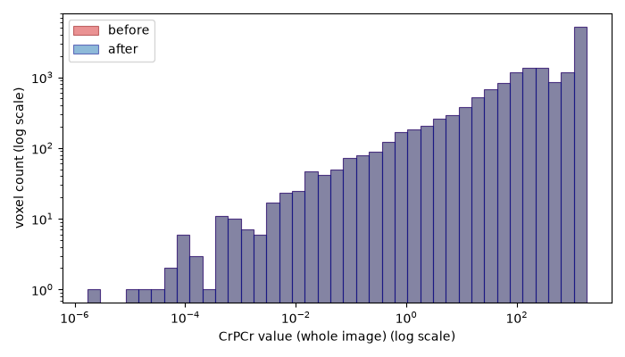

Spike voxels detected: 25
Hover over the figure to flip between before and after spike filtering.
Get figure file: figures/sub-01_ses-01_step-mrsi-preproc_met-GluGln_spikefilt.svg

Spike voxels detected: 20
Hover over the figure to flip between before and after spike filtering.
Get figure file: figures/sub-01_ses-01_step-mrsi-preproc_met-Ins_spikefilt.svg

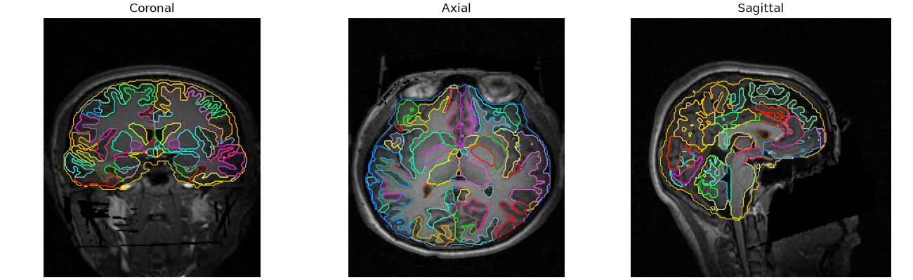


Reference metabolite map (CrPCr) overlaid on raw T1w, with the white-matter boundary outlined in light blue. Hover over the figure to cycle between the anatomy with the white-matter boundary, the same plus the metabolite overlay, and the overlay alone without the boundary.
Each metabolite's map resampled into this space, overlaid on the same anatomy as the figure above, at equally-spaced axial slices.
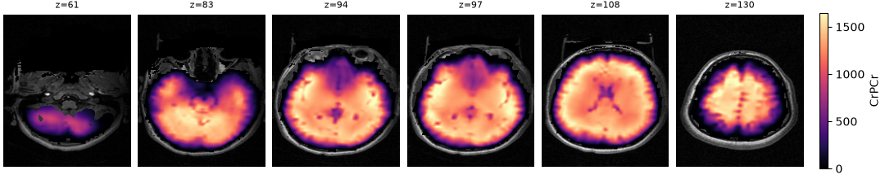


| metabolite | n_quality_voxels | total_signal_mass | leakage_signal_mass | leakage_fraction | leakage_percent |
|---|---|---|---|---|---|
| CrPCr | 5810188 | 723145024.000 | 2138986.250 | 0.003 | 0.296 |
| GPCPCh | 5819110 | 201610336.000 | 699370.625 | 0.003 | 0.347 |
| GluGln | 5807911 | 990439488.000 | 3493740.000 | 0.004 | 0.353 |
| Ins | 5791332 | 613560128.000 | 2075317.375 | 0.003 | 0.338 |
| NAANAAG | 5841939 | 1130268672.000 | 3479187.250 | 0.003 | 0.308 |
Reference metabolite map (CrPCr) overlaid on the full-head MNI152NLin2009cAsym template at 5 mm, with the white-matter boundary outlined in light blue. Hover over the figure to cycle between the anatomy with the white-matter boundary, the same plus the metabolite overlay, and the overlay alone without the boundary.
Each metabolite's map resampled into this space, overlaid on the same anatomy as the figure above, at equally-spaced axial slices.

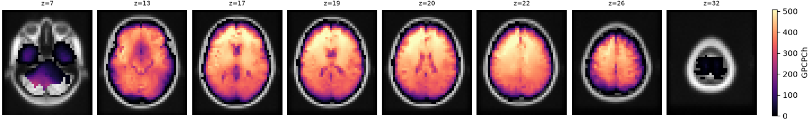
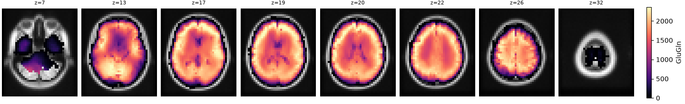
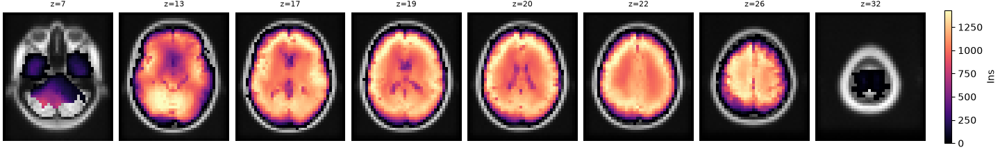
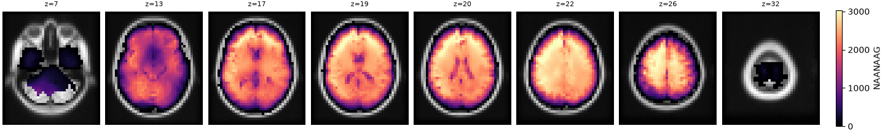
| metabolite | n_quality_voxels | total_signal_mass | leakage_signal_mass | leakage_fraction | leakage_percent |
|---|---|---|---|---|---|
| CrPCr | 73702 | 15091777.000 | 83692.461 | 0.006 | 0.555 |
| GPCPCh | 73843 | 4212140.000 | 27155.375 | 0.006 | 0.645 |
| GluGln | 73602 | 20510400.000 | 135095.188 | 0.007 | 0.659 |
| Ins | 73361 | 12787429.000 | 80213.000 | 0.006 | 0.627 |
| NAANAAG | 74250 | 23753540.000 | 136478.156 | 0.006 | 0.575 |
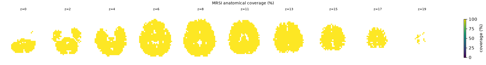

qc_valid_fraction is the fraction of a parcel's MRSI voxels that passed every per-voxel quality threshold in force for this run (CRLB ≤ 20.0%, SNR ≥ 4.0, linewidth ≤ 0.1 Hz), averaged over metabolites. Rows are ordered worst first. Thresholds assume the lcmodel convention for CRLB/SNR/linewidth.
| parcel_id | parcel_name | hemisphere | mean_crlb | qc_valid_fraction |
|---|---|---|---|---|
| 2006 | ctx-rh-entorhinal | R | 40.509 | 0.182 |
| 46 | Right-Cerebellum-White-Matter | R | 16.267 | 0.214 |
| 7 | Left-Cerebellum-White-Matter | L | 12.917 | 0.280 |
| 2033 | ctx-rh-temporalpole | R | 161.413 | 0.280 |
| 1006 | ctx-lh-entorhinal | L | 129.467 | 0.305 |
| 18 | Left-Amygdala | L | 21.233 | 0.317 |
| 1032 | ctx-lh-frontalpole | L | 20.200 | 0.325 |
| 2032 | ctx-rh-frontalpole | R | 251.950 | 0.350 |
| 47 | Right-Cerebellum-Cortex | R | 36.050 | 0.399 |
| 2019 | ctx-rh-parsorbitalis | R | 38.150 | 0.410 |
| 8 | Left-Cerebellum-Cortex | L | 17.627 | 0.410 |
| 1011 | ctx-lh-lateraloccipital | L | 9.010 | 0.478 |
| 1009 | ctx-lh-inferiortemporal | L | 26.368 | 0.486 |
| 1033 | ctx-lh-temporalpole | L | 18.878 | 0.533 |
| 16 | Brain-Stem | NaN | 16.434 | 0.542 |
| 1027 | ctx-lh-rostralmiddlefrontal | L | 8.617 | 0.544 |
| 2011 | ctx-rh-lateraloccipital | R | 7.775 | 0.560 |
| 26 | Left-Accumbens-area | L | 17.200 | 0.600 |
| 1007 | ctx-lh-fusiform | L | 21.647 | 0.693 |
| 2027 | ctx-rh-rostralmiddlefrontal | R | 18.645 | 0.699 |
| 2009 | ctx-rh-inferiortemporal | R | 35.018 | 0.699 |
| 1015 | ctx-lh-middletemporal | L | 22.864 | 0.749 |
| 2012 | ctx-rh-lateralorbitofrontal | R | 25.921 | 0.772 |
| 2002 | ctx-rh-caudalanteriorcingulate | R | 15.722 | 0.778 |
| 1012 | ctx-lh-lateralorbitofrontal | L | 28.191 | 0.783 |
| 1014 | ctx-lh-medialorbitofrontal | L | 32.343 | 0.786 |
| 54 | Right-Amygdala | R | 12.180 | 0.800 |
| 58 | Right-Accumbens-area | R | 17.143 | 0.829 |
| 1003 | ctx-lh-caudalmiddlefrontal | L | 6.631 | 0.839 |
| 2007 | ctx-rh-fusiform | R | 11.623 | 0.843 |
| 1022 | ctx-lh-postcentral | L | 6.663 | 0.845 |
| 1031 | ctx-lh-supramarginal | L | 6.617 | 0.847 |
| 1028 | ctx-lh-superiorfrontal | L | 8.050 | 0.851 |
| 17 | Left-Hippocampus | L | 12.644 | 0.852 |
| 2022 | ctx-rh-postcentral | R | 6.656 | 0.864 |
| 1016 | ctx-lh-parahippocampal | L | 11.578 | 0.878 |
| 2003 | ctx-rh-caudalmiddlefrontal | R | 7.774 | 0.885 |
| 1008 | ctx-lh-inferiorparietal | L | 7.033 | 0.888 |
| 60 | Right-VentralDC | R | 10.207 | 0.900 |
| 2026 | ctx-rh-rostralanteriorcingulate | R | 12.682 | 0.900 |
| 1021 | ctx-lh-pericalcarine | L | 7.400 | 0.900 |
| 53 | Right-Hippocampus | R | 11.092 | 0.900 |
| 2015 | ctx-rh-middletemporal | R | 12.514 | 0.902 |
| 50 | Right-Caudate | R | 10.006 | 0.909 |
| 2029 | ctx-rh-superiorparietal | R | 7.010 | 0.926 |
| 1026 | ctx-lh-rostralanteriorcingulate | L | 17.215 | 0.926 |
| 2020 | ctx-rh-parstriangularis | R | 9.741 | 0.929 |
| 2035 | ctx-rh-insula | R | 7.692 | 0.933 |
| 2014 | ctx-rh-medialorbitofrontal | R | 15.741 | 0.941 |
| 1024 | ctx-lh-precentral | L | 6.848 | 0.942 |
| 28 | Left-VentralDC | L | 11.907 | 0.947 |
| 2028 | ctx-rh-superiorfrontal | R | 7.345 | 0.949 |
| 1030 | ctx-lh-superiortemporal | L | 7.559 | 0.949 |
| 52 | Right-Pallidum | R | 9.975 | 0.950 |
| 1029 | ctx-lh-superiorparietal | L | 7.116 | 0.952 |
| 2031 | ctx-rh-supramarginal | R | 6.070 | 0.952 |
| 1002 | ctx-lh-caudalanteriorcingulate | L | 9.800 | 0.958 |
| 1020 | ctx-lh-parstriangularis | L | 7.986 | 0.959 |
| 11 | Left-Caudate | L | 8.415 | 0.960 |
| 2 | Left-Cerebral-White-Matter | L | 8.465 | 0.961 |
| 12 | Left-Putamen | L | 7.544 | 0.967 |
| 2008 | ctx-rh-inferiorparietal | R | 6.284 | 0.967 |
| 1013 | ctx-lh-lingual | L | 6.762 | 0.969 |
| 2005 | ctx-rh-cuneus | R | 6.576 | 0.970 |
| 1035 | ctx-lh-insula | L | 7.389 | 0.973 |
| 2024 | ctx-rh-precentral | R | 6.830 | 0.973 |
| 2016 | ctx-rh-parahippocampal | R | 8.693 | 0.973 |
| 41 | Right-Cerebral-White-Matter | R | 8.017 | 0.974 |
| 13 | Left-Pallidum | L | 11.025 | 0.975 |
| 1018 | ctx-lh-parsopercularis | L | 6.968 | 0.979 |
| 51 | Right-Putamen | R | 7.631 | 0.979 |
| 1025 | ctx-lh-precuneus | L | 6.374 | 0.984 |
| 2030 | ctx-rh-superiortemporal | R | 7.036 | 0.986 |
| 10 | Left-Thalamus | L | 7.826 | 0.992 |
| 1017 | ctx-lh-paracentral | L | 7.015 | 0.995 |
| 2013 | ctx-rh-lingual | R | 7.204 | 0.996 |
| 49 | Right-Thalamus | R | 7.043 | 0.997 |
| 1005 | ctx-lh-cuneus | L | 7.046 | 1.000 |
| 1010 | ctx-lh-isthmuscingulate | L | 5.794 | 1.000 |
| 1001 | ctx-lh-bankssts | L | 5.678 | 1.000 |
| 2001 | ctx-rh-bankssts | R | 6.925 | 1.000 |
| 1034 | ctx-lh-transversetemporal | L | 5.543 | 1.000 |
| 1019 | ctx-lh-parsorbitalis | L | 7.737 | 1.000 |
| 1023 | ctx-lh-posteriorcingulate | L | 5.910 | 1.000 |
| 2010 | ctx-rh-isthmuscingulate | R | 5.925 | 1.000 |
| 2021 | ctx-rh-pericalcarine | R | 6.800 | 1.000 |
| 2018 | ctx-rh-parsopercularis | R | 7.619 | 1.000 |
| 2017 | ctx-rh-paracentral | R | 6.511 | 1.000 |
| 2023 | ctx-rh-posteriorcingulate | R | 5.869 | 1.000 |
| 2025 | ctx-rh-precuneus | R | 5.864 | 1.000 |
| 2034 | ctx-rh-transversetemporal | R | 5.493 | 1.000 |
Not available for this configuration.
| subject | session | atlas | scale | parcel_id | parcel_name | hemisphere | metabolite | mean | median | std | weighted_mean | n_voxels | coverage | mean_snr | mean_linewidth | mean_crlb | mean_gm_fraction | mean_wm_fraction | mean_csf_fraction |
|---|---|---|---|---|---|---|---|---|---|---|---|---|---|---|---|---|---|---|---|
| sub-01 | ses-01 | synthseg | NaN | 2 | Left-Cerebral-White-Matter | L | NAANAAG | 2405.093750 | 2512.891113 | 598.690918 | 2454.398682 | 1546 | 0.968672 | 15.983182 | 0.033426 | 4.187581 | 0.175346 | 0.819371 | 0.005283 |
| sub-01 | ses-01 | synthseg | NaN | 2 | Left-Cerebral-White-Matter | L | GPCPCh | 400.716003 | 409.775482 | 88.274574 | 401.967041 | 1544 | 0.967419 | 15.992876 | 0.033412 | 6.028497 | 0.175482 | 0.819229 | 0.005290 |
| sub-01 | ses-01 | synthseg | NaN | 2 | Left-Cerebral-White-Matter | L | CrPCr | 1365.577148 | 1385.771118 | 250.398209 | 1376.020996 | 1543 | 0.966792 | 16.005833 | 0.033380 | 5.635775 | 0.175181 | 0.819526 | 0.005293 |
| sub-01 | ses-01 | synthseg | NaN | 2 | Left-Cerebral-White-Matter | L | GluGln | 1843.333374 | 1859.153076 | 391.516022 | 1855.754150 | 1509 | 0.945489 | 16.025183 | 0.033540 | 11.163685 | 0.177242 | 0.817726 | 0.005032 |
| sub-01 | ses-01 | synthseg | NaN | 2 | Left-Cerebral-White-Matter | L | Ins | 1164.311523 | 1191.746826 | 220.658829 | 1173.560791 | 1526 | 0.956140 | 16.103539 | 0.033059 | 8.028833 | 0.174497 | 0.820151 | 0.005352 |
| sub-01 | ses-01 | synthseg | NaN | 7 | Left-Cerebellum-White-Matter | L | NAANAAG | 1528.188599 | 1506.833862 | 313.885193 | 1541.565308 | 22 | 0.293333 | 7.090909 | 0.043682 | 8.681818 | 0.151114 | 0.838414 | 0.010472 |
| sub-01 | ses-01 | synthseg | NaN | 7 | Left-Cerebellum-White-Matter | L | GPCPCh | 319.173004 | 318.588318 | 34.568047 | 320.649231 | 21 | 0.280000 | 7.190476 | 0.043762 | 8.714286 | 0.156261 | 0.832769 | 0.010970 |
| sub-01 | ses-01 | synthseg | NaN | 7 | Left-Cerebellum-White-Matter | L | CrPCr | 1271.075806 | 1275.190063 | 205.561401 | 1277.616577 | 22 | 0.293333 | 7.090909 | 0.043682 | 8.681818 | 0.151114 | 0.838414 | 0.010472 |
| sub-01 | ses-01 | synthseg | NaN | 7 | Left-Cerebellum-White-Matter | L | GluGln | 1751.696167 | 1772.565308 | 318.616302 | 1760.322998 | 19 | 0.253333 | 7.315790 | 0.043474 | 13.684211 | 0.171694 | 0.816181 | 0.012125 |
| sub-01 | ses-01 | synthseg | NaN | 7 | Left-Cerebellum-White-Matter | L | Ins | 1111.088623 | 1120.777466 | 174.805603 | 1117.871216 | 21 | 0.280000 | 7.190476 | 0.043762 | 10.904762 | 0.156261 | 0.832769 | 0.010970 |
| sub-01 | ses-01 | synthseg | NaN | 8 | Left-Cerebellum-Cortex | L | NAANAAG | 1805.613159 | 1911.634399 | 446.183044 | 1838.661987 | 91 | 0.421296 | 7.692307 | 0.039626 | 9.098901 | 0.672425 | 0.248577 | 0.078998 |
| sub-01 | ses-01 | synthseg | NaN | 8 | Left-Cerebellum-Cortex | L | GPCPCh | 342.545746 | 363.697662 | 67.408241 | 347.226440 | 91 | 0.421296 | 7.648352 | 0.038846 | 9.813187 | 0.671916 | 0.248577 | 0.079184 |
| sub-01 | ses-01 | synthseg | NaN | 8 | Left-Cerebellum-Cortex | L | CrPCr | 1434.033569 | 1525.431396 | 316.342865 | 1459.583252 | 90 | 0.416667 | 7.677778 | 0.038489 | 9.344444 | 0.672655 | 0.246954 | 0.080063 |
| sub-01 | ses-01 | synthseg | NaN | 8 | Left-Cerebellum-Cortex | L | GluGln | 1976.344727 | 2098.170410 | 458.273163 | 2014.094482 | 82 | 0.379630 | 7.804878 | 0.039500 | 13.304878 | 0.676202 | 0.235723 | 0.088075 |
| sub-01 | ses-01 | synthseg | NaN | 8 | Left-Cerebellum-Cortex | L | Ins | 1263.673340 | 1318.053711 | 237.012817 | 1279.584717 | 89 | 0.412037 | 7.741573 | 0.039124 | 11.393258 | 0.682708 | 0.246791 | 0.070501 |
| sub-01 | ses-01 | synthseg | NaN | 10 | Left-Thalamus | L | NAANAAG | 2015.785767 | 2019.751221 | 230.765854 | 2023.345337 | 53 | 1.000000 | 12.867925 | 0.028226 | 4.415094 | 0.266145 | 0.708914 | 0.024941 |
| sub-01 | ses-01 | synthseg | NaN | 10 | Left-Thalamus | L | GPCPCh | 376.722778 | 381.103424 | 47.058750 | 377.739288 | 53 | 1.000000 | 12.867925 | 0.028226 | 5.811321 | 0.266145 | 0.708914 | 0.024941 |
| sub-01 | ses-01 | synthseg | NaN | 10 | Left-Thalamus | L | CrPCr | 1219.318481 | 1240.737183 | 103.296043 | 1219.799683 | 53 | 1.000000 | 12.867925 | 0.028226 | 6.075472 | 0.266145 | 0.708914 | 0.024941 |
| sub-01 | ses-01 | synthseg | NaN | 10 | Left-Thalamus | L | GluGln | 1525.603271 | 1554.755737 | 118.814049 | 1525.448853 | 51 | 0.962264 | 12.862745 | 0.027627 | 12.431373 | 0.257538 | 0.716542 | 0.025919 |
| sub-01 | ses-01 | synthseg | NaN | 10 | Left-Thalamus | L | Ins | 992.957886 | 1005.072205 | 72.524261 | 993.307739 | 53 | 1.000000 | 12.867925 | 0.028226 | 9.754717 | 0.266145 | 0.708914 | 0.024941 |
| sub-01 | ses-01 | synthseg | NaN | 11 | Left-Caudate | L | NAANAAG | 2031.055420 | 2161.048828 | 379.526794 | 2076.715576 | 40 | 1.000000 | 13.000000 | 0.035550 | 5.075000 | 0.518805 | 0.409537 | 0.071657 |
| sub-01 | ses-01 | synthseg | NaN | 11 | Left-Caudate | L | GPCPCh | 402.641724 | 420.927368 | 55.890148 | 404.190765 | 39 | 0.975000 | 13.230769 | 0.035385 | 5.820513 | 0.511785 | 0.414720 | 0.073495 |
| sub-01 | ses-01 | synthseg | NaN | 11 | Left-Caudate | L | CrPCr | 1094.868774 | 1110.654785 | 133.212631 | 1093.893677 | 38 | 0.950000 | 13.421053 | 0.034605 | 5.868421 | 0.498937 | 0.425634 | 0.075429 |
| sub-01 | ses-01 | synthseg | NaN | 11 | Left-Caudate | L | GluGln | 1264.464233 | 1269.011230 | 162.630081 | 1264.907959 | 38 | 0.950000 | 13.447369 | 0.035211 | 13.184211 | 0.516655 | 0.407916 | 0.075429 |
| sub-01 | ses-01 | synthseg | NaN | 11 | Left-Caudate | L | Ins | 880.649719 | 890.579651 | 104.444000 | 879.717590 | 37 | 0.925000 | 13.648648 | 0.034405 | 9.054054 | 0.503592 | 0.418941 | 0.077467 |
| sub-01 | ses-01 | synthseg | NaN | 12 | Left-Putamen | L | NAANAAG | 2194.964844 | 2337.776123 | 349.763214 | 2271.127197 | 35 | 0.972222 | 13.400000 | 0.031171 | 4.228571 | 0.210043 | 0.789957 | 0.000000 |
| sub-01 | ses-01 | synthseg | NaN | 12 | Left-Putamen | L | GPCPCh | 439.554443 | 449.208710 | 34.479851 | 446.454681 | 35 | 0.972222 | 13.400000 | 0.031171 | 5.371428 | 0.210043 | 0.789957 | 0.000000 |
| sub-01 | ses-01 | synthseg | NaN | 12 | Left-Putamen | L | CrPCr | 1291.319092 | 1310.143188 | 118.575111 | 1310.608521 | 35 | 0.972222 | 13.400000 | 0.031171 | 5.257143 | 0.210043 | 0.789957 | 0.000000 |
| sub-01 | ses-01 | synthseg | NaN | 12 | Left-Putamen | L | GluGln | 1558.833374 | 1548.196289 | 187.779785 | 1582.117432 | 34 | 0.944444 | 13.441176 | 0.031382 | 11.058824 | 0.204869 | 0.795131 | 0.000000 |
| sub-01 | ses-01 | synthseg | NaN | 12 | Left-Putamen | L | Ins | 1025.020142 | 1022.388855 | 100.634445 | 1039.544434 | 35 | 0.972222 | 13.400000 | 0.031171 | 9.000000 | 0.210043 | 0.789957 | 0.000000 |
| sub-01 | ses-01 | synthseg | NaN | 13 | Left-Pallidum | L | NAANAAG | 2135.111572 | 2199.589844 | 220.268875 | 2171.096680 | 8 | 1.000000 | 10.875000 | 0.039125 | 8.375000 | 0.010044 | 0.989956 | 0.000000 |
| sub-01 | ses-01 | synthseg | NaN | 13 | Left-Pallidum | L | GPCPCh | 449.629700 | 457.337769 | 18.351871 | 452.026947 | 8 | 1.000000 | 10.875000 | 0.039125 | 9.625000 | 0.010044 | 0.989956 | 0.000000 |
| sub-01 | ses-01 | synthseg | NaN | 13 | Left-Pallidum | L | CrPCr | 1256.123291 | 1278.000488 | 47.006115 | 1261.810303 | 8 | 1.000000 | 10.875000 | 0.039125 | 9.625000 | 0.010044 | 0.989956 | 0.000000 |
| sub-01 | ses-01 | synthseg | NaN | 13 | Left-Pallidum | L | GluGln | 1462.976929 | 1478.745361 | 43.716354 | 1468.767578 | 8 | 1.000000 | 10.875000 | 0.039125 | 13.500000 | 0.010044 | 0.989956 | 0.000000 |
| sub-01 | ses-01 | synthseg | NaN | 13 | Left-Pallidum | L | Ins | 982.489746 | 991.233521 | 30.522911 | 984.485229 | 7 | 0.875000 | 11.571428 | 0.037143 | 12.285714 | 0.000000 | 1.000000 | 0.000000 |
| sub-01 | ses-01 | synthseg | NaN | 16 | Brain-Stem | NaN | NAANAAG | 1281.700684 | 1344.794067 | 610.062988 | 1407.359985 | 57 | 0.553398 | 9.561403 | 0.056702 | 8.017544 | 0.107167 | 0.753682 | 0.138113 |
| sub-01 | ses-01 | synthseg | NaN | 16 | Brain-Stem | NaN | GPCPCh | 281.837555 | 310.668579 | 100.501526 | 300.928467 | 56 | 0.543689 | 9.642858 | 0.056661 | 9.071428 | 0.106107 | 0.760781 | 0.132055 |
| sub-01 | ses-01 | synthseg | NaN | 16 | Brain-Stem | NaN | CrPCr | 1009.407227 | 1100.708740 | 417.407166 | 1091.299316 | 57 | 0.553398 | 9.561403 | 0.056702 | 9.771930 | 0.107167 | 0.753682 | 0.138113 |
| sub-01 | ses-01 | synthseg | NaN | 16 | Brain-Stem | NaN | GluGln | 1328.483643 | 1439.835205 | 535.617188 | 1434.699341 | 55 | 0.533981 | 9.545455 | 0.057036 | 11.981818 | 0.100892 | 0.761875 | 0.136158 |
| sub-01 | ses-01 | synthseg | NaN | 16 | Brain-Stem | NaN | Ins | 893.484741 | 974.751587 | 307.216980 | 942.990784 | 54 | 0.524272 | 9.833333 | 0.055963 | 12.037037 | 0.110037 | 0.751921 | 0.136946 |
| sub-01 | ses-01 | synthseg | NaN | 17 | Left-Hippocampus | L | NAANAAG | 1414.950439 | 1374.168579 | 501.251648 | 1550.412842 | 25 | 0.925926 | 9.960000 | 0.048480 | 7.120000 | 0.810304 | 0.150675 | 0.039021 |
| sub-01 | ses-01 | synthseg | NaN | 17 | Left-Hippocampus | L | GPCPCh | 309.243866 | 316.425903 | 66.033012 | 323.062256 | 24 | 0.888889 | 10.166667 | 0.048750 | 8.291667 | 0.802400 | 0.156953 | 0.040647 |
| sub-01 | ses-01 | synthseg | NaN | 17 | Left-Hippocampus | L | CrPCr | 1096.970337 | 1074.765625 | 284.996704 | 1160.606689 | 23 | 0.851852 | 10.434783 | 0.048174 | 8.260870 | 0.794001 | 0.163777 | 0.042222 |
| sub-01 | ses-01 | synthseg | NaN | 17 | Left-Hippocampus | L | GluGln | 1375.641479 | 1411.527466 | 411.971863 | 1480.839722 | 22 | 0.814815 | 9.863636 | 0.049409 | 12.818182 | 0.810145 | 0.168844 | 0.021011 |
| sub-01 | ses-01 | synthseg | NaN | 17 | Left-Hippocampus | L | Ins | 946.462036 | 912.820496 | 205.376358 | 987.685669 | 21 | 0.777778 | 10.666667 | 0.046571 | 11.000000 | 0.780527 | 0.177786 | 0.041687 |
| sub-01 | ses-01 | synthseg | NaN | 18 | Left-Amygdala | L | NAANAAG | 1221.535278 | 1183.786621 | 334.895905 | 1244.559448 | 4 | 0.333333 | 8.250000 | 0.069000 | 8.000000 | 0.611534 | 0.388465 | 0.000000 |
| sub-01 | ses-01 | synthseg | NaN | 18 | Left-Amygdala | L | GPCPCh | 318.987823 | 310.100708 | 52.705044 | 322.741180 | 4 | 0.333333 | 8.250000 | 0.069000 | 8.750000 | 0.611534 | 0.388465 | 0.000000 |
| sub-01 | ses-01 | synthseg | NaN | 18 | Left-Amygdala | L | CrPCr | 930.354919 | 907.063843 | 137.410446 | 941.238159 | 4 | 0.333333 | 8.250000 | 0.069000 | 11.000000 | 0.611534 | 0.388465 | 0.000000 |
| sub-01 | ses-01 | synthseg | NaN | 18 | Left-Amygdala | L | GluGln | 1115.645996 | 1087.251953 | 154.263626 | 1128.926025 | 4 | 0.333333 | 8.250000 | 0.069000 | 12.750000 | 0.611534 | 0.388465 | 0.000000 |
| sub-01 | ses-01 | synthseg | NaN | 18 | Left-Amygdala | L | Ins | 804.953430 | 828.846252 | 85.850655 | 814.156250 | 3 | 0.250000 | 8.333333 | 0.062333 | 13.666667 | 0.665453 | 0.334547 | 0.000000 |

| Parameter | Value | Unit |
|---|---|---|
| AcquisitionDurationMS | 389 | ms |
| Averages | 1 | |
| AveragingMode | N.A. | |
| CoilElements | N.A. (synthetic) | |
| CombinedMetabolites | tNAA (NAA+NAAG), tCr (Cr+PCr), Cho (GPC+PCh), Ins (mI), Glx (Glu+Gln) | |
| CompressedSensingAccelerationFactor | N.A. (synthetic) | |
| DataProcessing | Model-synthesized signal (3D U-Net trained on real template subjects); no k-space reconstruction | |
| DeltaFrequencyPPM | 0.0 | ppm |
| Dimension | 3D | |
| FIDPointsVectorSize | 512 | |
| FOV | 220 x 220 x 130 | mm |
| FlipAngle | 45.0 | ° |
| MagneticFieldStrength | 3.0 | T |
| MatrixSize | 44 x 44 x 25 | |
| Measurements | 1 | |
| MetaboliteBasisSetLCModel | NAA, NAAG, Cr, PCr, GPC, PCh, mI, sI, Glu, Gln, Lac, GABA, GSH, Tau, Asp, Ala | |
| Note | SynthMRSI-Project is a synthetic dataset: real T1w anatomicals paired with model-synthesized MRSI metabolite signal (3D U-Net; see MRSIPrep manuscript, Validation Datasets). No real MRSI acquisition underlies these values -- numeric geometry/timing fields (TE, RepetitionTime, FOV, resolution, matrix size, field strength, etc.) record the acquisition protocol the synthetic signal generation was matched to; fields describing a specific real pulse sequence, reconstruction, or hardware are marked N.A. since none was used. | |
| Orientation | Transverse | |
| PhaseEncoding | N.A. (synthetic) | |
| PreparationScans | N.A. (synthetic) | |
| QualityMetrics | SNR, CRLB, FWHM (synthesized, not derived from spectral fitting) | |
| Quantification | N.A. (synthetic; not derived from spectral fitting) | |
| RFCoils | N.A. (synthetic) | |
| RemoveOversampling | N.A. | |
| RepetitionTime | 0.457 | s |
| ResolutionMM3 | 5 x 5 x 5.2 | mm |
| RotationDeg | -0.79 | ° |
| SaturationBands | N.A. (synthetic) | |
| Scanner | N.A. (synthetic; no scanner) | |
| Sequence | N.A. (synthetic; not acquired with a real MRSI sequence) | |
| ShimMode | N.A. (synthetic) | |
| SlabThicknessMM | 95 | mm |
| Slabs | 1 | |
| SpectralBandwidthHz | 1320 | Hz |
| SpectralSuppr | N.A. (synthetic) | |
| TE | 0.78 | s |
| WaterReferenceFIDPoints | 512 | |
| WaterReferenceFlipAngle | 45.0 | ° |
| WaterReferenceResolutionMM3 | 10.0 x 10.0 x 10.0 | mm |
| WaterReferenceTE | 0.72 | s |
| WaterReferenceTR | 0.46 | s |
| WaterSuppr | N.A. (synthetic) | |
| WaterSupprBWHz | N.A. (synthetic) | Hz |
| Parameter | Value |
|---|---|
| Nucleus | 1H |
| Tissue backend | synthseg-fast |
| Registration backend | ants |
| Registration T1w target | brain |
| Normalization | simple |
| Output spaces | MNI152NLin2009cAsym |
| Parcellation mode | synthseg |
| Atlas | chimera-LFMIHIFIS_scale3 |
| SNR min | 4.0 |
| Linewidth max | 0.1 |
| CRLB max | 20.0 |
| Biharmonic spike filtering | True |
| Spike percentile | 99.0 |
| PVC disabled | False |
| T1 saturation correction | none |
| Connectivity | True |
| nproc x nthreads | 2 x 8 |
If you use MRSIPrep, please cite: Lucchetti, F., Céléreau, E., Jenni, R., Ledoux, J.-B., Eliez, S., Delavari, F., Hagmann, P., Alemán-Gómez, Y., Klauser, A., & Klauser, P. (2026). MRSIPrep: A Standardized Post-Quantification Framework for Preprocessing Whole-Brain Magnetic Resonance Spectroscopic Imaging. bioRxiv. doi:10.64898/2026.09.11.750896. A downloadable BibTeX entry is in CITATION.cff in the MRSIPrep repository.
MRSI acquisition reporting follows the MRSinMRS minimum reporting standard (Lin et al. 2021).
nproc: 2 | nthreads: 8
Excludes this report-generation step's own duration (not yet known while it's still running) and any time spent before this recording's pipeline started (e.g. queued behind other recordings under --nproc).
PROC computed this run · REUSED existing outputs reused (re-run with --overwrite to recompute) · N/A not requested by this configuration · FAILED raised an error
| Step | Outcome | Duration | % of total |
|---|---|---|---|
| Tissue segmentation | PROC | 1m 04.8s | 23.6% |
| Anatomical preparation | PROC | 0.0s | 0.0% |
| MRSI loading | PROC | 0.0s | 0.0% |
| Spike filtering | PROC | 4.4s | 1.6% |
| T1 saturation correction | PROC | 0.0s | 0.0% |
| MRSI reference image | PROC | 0.0s | 0.0% |
| MRSI voxel-quality masks | PROC | 0.0s | 0.0% |
| MRSI-to-T1w registration | PROC | 1m 00.7s | 22.1% |
| T1w-to-template registration | PROC | 1m 39.1s | 36.1% |
| Tissue probability maps in MRSI space | PROC | 0.6s | 0.2% |
| Partial volume correction | PROC | 0.2s | 0.1% |
| Resampling MRSI maps to T1w/MNI space | PROC | 20.1s | 7.3% |
| Signal leakage QC | PROC | 0.7s | 0.3% |
| SynthSeg parcellation and QC | PROC | 22.8s | 8.3% |
| Regional metabolite extraction | PROC | 0.6s | 0.2% |
| Regional metabolic profiles and connectivity | PROC | 0.6s | 0.2% |
| Parcellation (chimera/atlas) parcellation_mode=synthseg, requires chimera or atlas | N/A | - | - |
| Total (through report generation) | 4m 34.5s | 100.0% |
ses-01/
├── anat/
│ └── synthseg/
│ ├── sub-01_ses-01_atlas-synthseg_desc-parcelqc.tsv
│ ├── sub-01_ses-01_atlas-synthseg_desc-robustGMWM.tsv
│ ├── sub-01_ses-01_space-mrsi_atlas-synthseg_desc-regional_metabolites.tsv
│ ├── sub-01_ses-01_space-mrsi_atlas-synthseg_desc-robustGMWM_dseg.nii.gz
│ ├── sub-01_ses-01_space-T1w_atlas-synthseg_desc-robustGMWM_dseg.nii.gz
│ ├── sub-01_ses-01_space-T1w_desc-synthsegBrain_mask.nii.gz
│ ├── sub-01_ses-01_space-T1w_desc-synthsegBrain_T1w.nii.gz
│ ├── sub-01_ses-01_space-T1w_desc-synthsegFastInput_T1w.nii.gz
│ └── sub-01_ses-01_space-T1w_desc-synthsegParcRobust_dseg.nii.gz
├── confounds/
│ ├── sub-01_ses-01_desc-leakageqc.tsv
│ ├── sub-01_ses-01_desc-mrsiqc.tsv
│ ├── sub-01_ses-01_desc-ventricleqc.tsv
│ ├── sub-01_ses-01_space-MNI152NLin2009cAsym_res-5_desc-fwhm_mrsi.nii.gz
│ ├── sub-01_ses-01_space-MNI152NLin2009cAsym_res-5_desc-snr_mrsi.nii.gz
│ ├── sub-01_ses-01_space-MNI152NLin2009cAsym_res-5_met-CrPCr_desc-crlb_mrsi.nii.gz
│ ├── sub-01_ses-01_space-MNI152NLin2009cAsym_res-5_met-GluGln_desc-crlb_mrsi.nii.gz
│ ├── sub-01_ses-01_space-MNI152NLin2009cAsym_res-5_met-GPCPCh_desc-crlb_mrsi.nii.gz
│ ├── sub-01_ses-01_space-MNI152NLin2009cAsym_res-5_met-Ins_desc-crlb_mrsi.nii.gz
│ ├── sub-01_ses-01_space-MNI152NLin2009cAsym_res-5_met-NAANAAG_desc-crlb_mrsi.nii.gz
│ ├── sub-01_ses-01_space-mrsi_desc-brain_mask.nii.gz
│ ├── sub-01_ses-01_space-mrsi_label-CSF_probseg.nii.gz
│ ├── sub-01_ses-01_space-mrsi_label-GM_probseg.nii.gz
│ ├── sub-01_ses-01_space-mrsi_label-latvent_mask.nii.gz
│ ├── sub-01_ses-01_space-mrsi_label-WM_probseg.nii.gz
│ ├── sub-01_ses-01_space-mrsi_met-CrPCr_desc-qcmask_mask.nii.gz
│ ├── sub-01_ses-01_space-mrsi_met-CrPCr_desc-spikemask_mask.nii.gz
│ ├── sub-01_ses-01_space-mrsi_met-GluGln_desc-qcmask_mask.nii.gz
│ ├── sub-01_ses-01_space-mrsi_met-GluGln_desc-spikemask_mask.nii.gz
│ ├── sub-01_ses-01_space-mrsi_met-GPCPCh_desc-qcmask_mask.nii.gz
│ ├── sub-01_ses-01_space-mrsi_met-GPCPCh_desc-spikemask_mask.nii.gz
│ ├── sub-01_ses-01_space-mrsi_met-Ins_desc-qcmask_mask.nii.gz
│ ├── sub-01_ses-01_space-mrsi_met-Ins_desc-spikemask_mask.nii.gz
│ ├── sub-01_ses-01_space-mrsi_met-NAANAAG_desc-qcmask_mask.nii.gz
│ ├── sub-01_ses-01_space-mrsi_met-NAANAAG_desc-spikemask_mask.nii.gz
│ ├── sub-01_ses-01_space-orig_desc-fwhm_mrsi.nii.gz
│ ├── sub-01_ses-01_space-orig_desc-snr_mrsi.nii.gz
│ ├── sub-01_ses-01_space-orig_met-CrPCr_desc-crlb_mrsi.nii.gz
│ ├── sub-01_ses-01_space-orig_met-GluGln_desc-crlb_mrsi.nii.gz
│ ├── sub-01_ses-01_space-orig_met-GPCPCh_desc-crlb_mrsi.nii.gz
│ ├── sub-01_ses-01_space-orig_met-Ins_desc-crlb_mrsi.nii.gz
│ ├── sub-01_ses-01_space-orig_met-NAANAAG_desc-crlb_mrsi.nii.gz
│ ├── sub-01_ses-01_space-T1w_desc-fwhm_mrsi.nii.gz
│ ├── sub-01_ses-01_space-T1w_desc-snr_mrsi.nii.gz
│ ├── sub-01_ses-01_space-T1w_label-CSF_probseg.nii.gz
│ ├── sub-01_ses-01_space-T1w_label-GM_probseg.nii.gz
│ ├── sub-01_ses-01_space-T1w_label-WM_probseg.nii.gz
│ ├── sub-01_ses-01_space-T1w_met-CrPCr_desc-crlb_mrsi.nii.gz
│ ├── sub-01_ses-01_space-T1w_met-GluGln_desc-crlb_mrsi.nii.gz
│ ├── sub-01_ses-01_space-T1w_met-GPCPCh_desc-crlb_mrsi.nii.gz
│ ├── sub-01_ses-01_space-T1w_met-Ins_desc-crlb_mrsi.nii.gz
│ └── sub-01_ses-01_space-T1w_met-NAANAAG_desc-crlb_mrsi.nii.gz
├── connectivity/
│ ├── sub-01_ses-01_atlas-synthseg_npert-50_filt-biharmonic_pvcorr_GM_desc-connectivity_mrsi.npz
│ ├── sub-01_ses-01_atlas-synthseg_npert-50_filt-biharmonic_pvcorr_GM_desc-connectivity_mrsi.tsv
│ ├── sub-01_ses-01_atlas-synthseg_npert-50_filt-biharmonic_pvcorr_GM_desc-edges_mrsi.tsv
│ ├── sub-01_ses-01_atlas-synthseg_npert-50_filt-biharmonic_pvcorr_GM_desc-metabolicprofiles_mrsi.npz
│ └── sub-01_ses-01_atlas-synthseg_npert-50_filt-biharmonic_pvcorr_GM_desc-nodes_mrsi.tsv
├── logs/
│ └── sub-01_ses-01_desc-mrsiprep_log.txt
├── mrsi/
│ ├── mni/
│ │ ├── sub-01_ses-01_space-MNI152NLin2009cAsym_res-5_met-CrPCr_desc-signal_mrsi.nii.gz
│ │ ├── sub-01_ses-01_space-MNI152NLin2009cAsym_res-5_met-GluGln_desc-signal_mrsi.nii.gz
│ │ ├── sub-01_ses-01_space-MNI152NLin2009cAsym_res-5_met-GPCPCh_desc-signal_mrsi.nii.gz
│ │ ├── sub-01_ses-01_space-MNI152NLin2009cAsym_res-5_met-Ins_desc-signal_mrsi.nii.gz
│ │ └── sub-01_ses-01_space-MNI152NLin2009cAsym_res-5_met-NAANAAG_desc-signal_mrsi.nii.gz
│ ├── orig/
│ │ ├── sub-01_ses-01_space-mrsi_desc-reference_mrsi.nii.gz
│ │ ├── sub-01_ses-01_space-mrsi_met-CrPCr_desc-signal_mrsi.nii.gz
│ │ ├── sub-01_ses-01_space-mrsi_met-CrPCr_desc-signalspikefilt_mrsi.nii.gz
│ │ ├── sub-01_ses-01_space-mrsi_met-GluGln_desc-signal_mrsi.nii.gz
│ │ ├── sub-01_ses-01_space-mrsi_met-GluGln_desc-signalspikefilt_mrsi.nii.gz
│ │ ├── sub-01_ses-01_space-mrsi_met-GPCPCh_desc-signal_mrsi.nii.gz
│ │ ├── sub-01_ses-01_space-mrsi_met-GPCPCh_desc-signalspikefilt_mrsi.nii.gz
│ │ ├── sub-01_ses-01_space-mrsi_met-Ins_desc-signal_mrsi.nii.gz
│ │ ├── sub-01_ses-01_space-mrsi_met-Ins_desc-signalspikefilt_mrsi.nii.gz
│ │ ├── sub-01_ses-01_space-mrsi_met-NAANAAG_desc-signal_mrsi.nii.gz
│ │ └── sub-01_ses-01_space-mrsi_met-NAANAAG_desc-signalspikefilt_mrsi.nii.gz
│ ├── orig-pvc/
│ │ ├── sub-01_ses-01_space-mrsi_met-CrPCr_desc-signalpvc_mrsi.nii.gz
│ │ ├── sub-01_ses-01_space-mrsi_met-GluGln_desc-signalpvc_mrsi.nii.gz
│ │ ├── sub-01_ses-01_space-mrsi_met-GPCPCh_desc-signalpvc_mrsi.nii.gz
│ │ ├── sub-01_ses-01_space-mrsi_met-Ins_desc-signalpvc_mrsi.nii.gz
│ │ └── sub-01_ses-01_space-mrsi_met-NAANAAG_desc-signalpvc_mrsi.nii.gz
│ ├── parcel/
│ │ └── sub-01_ses-01_atlas-synthseg_desc-GMmetprofiles_mrsi.npz
│ └── t1w/
│ ├── sub-01_ses-01_space-T1w_met-CrPCr_desc-signal_mrsi.nii.gz
│ ├── sub-01_ses-01_space-T1w_met-GluGln_desc-signal_mrsi.nii.gz
│ ├── sub-01_ses-01_space-T1w_met-GPCPCh_desc-signal_mrsi.nii.gz
│ ├── sub-01_ses-01_space-T1w_met-Ins_desc-signal_mrsi.nii.gz
│ └── sub-01_ses-01_space-T1w_met-NAANAAG_desc-signal_mrsi.nii.gz
└── transforms/
├── anat/
│ ├── sub-01_ses-01_desc-t1w_to_mni.affine.mat
│ ├── sub-01_ses-01_desc-t1w_to_mni.affine_inv.mat
│ ├── sub-01_ses-01_desc-t1w_to_mni.syn.nii.gz
│ └── sub-01_ses-01_desc-t1w_to_mni.syn_inv.nii.gz
└── mrsi/
├── sub-01_ses-01_desc-mrsi_to_t1w.affine.mat
├── sub-01_ses-01_desc-mrsi_to_t1w.affine_inv.mat
├── sub-01_ses-01_desc-mrsi_to_t1w.syn.nii.gz
└── sub-01_ses-01_desc-mrsi_to_t1w.syn_inv.nii.gz